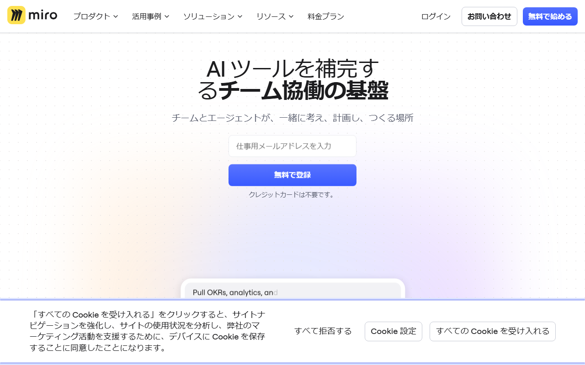

Miroの料金プランは？無料版でできること・有料版の違い・チーム総額
Miroは、会議や企画のアイデアをチームで整理するオンラインホワイトボードです。この記事では、4プランの料金と無料枠に加え、支払い方法や解約条件も紹介します。
Miroの料金プランはFree・Starter・Business・Enterpriseの4種類
- Free：US$0／編集可能3ボード
- Starter：月US$8〜／1メンバー
- Business：月US$20〜／1メンバー
- Enterprise：30人〜／個別見積もり
- 請求周期：月払い・年払い
編集するボードが3件以内なら、まずFreeが候補です。
公式サイトには料金が載っています。プランごとの機能も分かります。
Miroの料金をプラン別に紹介

表示は日本語です。「無料で始める」のボタンと、クレジットカード不要の案内が見えます。
Free：料金なしで始められる
Freeは無料です。編集できるボードは3件。費用をかけずに、Miroの操作感を試せます。
Starter：年払い換算の1メンバー料金
Starterの年払い換算は、1メンバーあたり月額US$8です。月払いはUS$10/メンバー/月。年額は1メンバーあたりUS$96になります。
Business：年払い換算の1メンバー料金
Businessは、年払い換算で1メンバーあたり月額US$20、月払いではUS$25/メンバー/月です。年額は1メンバーあたりUS$240になります。
Enterprise：個別見積もり
Enterpriseは個別見積もりです。対象は30メンバー以上。導入時は、利用人数と必要条件をMiroへ伝えて見積もりを取ります。
1人・3人・5人・10人のチーム総額
StarterとBusinessの年払い換算額に人数を掛けると、予算の目安は次のようになります。最低席数の説明が公式ページごとに異なるため、1人分の数字は単価の参考として載せています。
- Starter
- 1人：月US$8／年US$96
- 3人：月US$24／年US$288
- 5人：月US$40／年US$480
- 10人：月US$80／年US$960
- Business
- 1人：月US$20／年US$240
- 3人：月US$60／年US$720
- 5人：月US$100／年US$1,200
- 10人：月US$200／年US$2,400

円換算は1ドル=158円が目安です。3人の月額換算はStarterが約3,792円、Businessが約9,480円。為替で変動するため、予算感をつかむ1例として見てください。
料金表示はUSDです。契約画面では、請求周期とメンバー数に加え、最低席数も確かめてください。
Miro無料版でできること・できないこと
無料版で編集できるのは3ボードです。操作を試すだけなら十分。ただし、4件以上の案件を同時に更新するなら有料プランが必要です。
編集できるのは3ボード
料金ページとプラン解説には「無制限に作成でき、直近3件を編集可能」とあります。一方、Free Planのヘルプでは説明が違います。3ボードに達した後は、既存ボードを削除するかアップグレードする必要があると書かれています。
- 料金なしで利用を始められる
- 編集可能なボードは3件
- ボード作成数と4件目以降の扱いは公式ページ間で説明が異なる
4件目以降の扱いは不明です。無料版で過去のボードを残し、新しいボードを作り続けられるとは断定できません。
無料版で足りなくなるタイミング
会議や企画、顧客案件で4件以上のボードを継続して編集するなら、有料化を検討する時期です。Starterなら、無制限の非公開ボードを使い、案件ごとに分けたまま残せます。
社外メンバーを招くなら参加方法、チームで使うなら管理機能も比べます。Starterにない機能が必要なら、候補はBusinessです。
Starter・Business・Enterpriseの違いと選び方
有料プランは、ボード数だけでは選べません。次の条件も比べます。
- 社外の人との共有方法
- Workspaceを分けるか
- SSOが必要か
少人数なら必ずStarter、大人数なら必ずBusinessというわけではありません。
Starterを検討する人
Starterは、無制限の非公開ボードを使いたいチームの第一候補。サインイン不要のVisitor編集を使えます。高解像度での書き出しや、タイマー・投票にも対応します。
AI機能は1メンバーあたり月25 creditsです。複数のボードと会議の基本機能を中心に使うなら、Starterが候補になります。
Businessを検討する人
Businessでは、Starterの機能に加えて複数Workspaceを使えます。無制限GuestsとSSOが必要なチームにも向くプランです。User groupsと双方向連携に加え、AI workflows・agentsも含まれます。
候補はBusinessです。部署や案件ごとにWorkspaceを分けられます。社外ゲストの継続利用やシングルサインオンにも対応します。
Enterpriseを検討する人
Enterpriseは30メンバー以上を対象とする個別見積もりのプランです。全社で使う予定があり、Businessの機能では足りない場合に、利用人数と必要条件をまとめて見積もりを依頼します。
年払い・月払いと日本からの支払い方法
日本から直接契約する場合、料金はUSD建てです。カード払いが前提。カード決済後に取得する請求書・領収書と、請求書払いの条件は別です。
年払いは月払いより割引される
年払いは月払いより20%割引です。Starterは年払い換算US$8・月払いUS$10、Businessは年払い換算US$20・月払いUS$25です。
短期間だけ使うなら月払い、継続利用が決まっているなら年払いが候補です。年払いは途中解約しても未使用期間の返金がないため、返金条件まで見てから選びましょう。
日本からはクレジットカードで支払える
Miroではクレジットカードで支払えます。公式料金ページの表示はUSD。利用できるカードブランドは購入画面で確かめます。
請求書・領収書はBillingから取得できる
Stripe発行の請求書・領収書はBillingのInvoicesに保存されます。必要な書類はダウンロードでき、請求先メールにも届きます。
請求書払いは年払いのみ。利用にはStarterで10席以上、Businessで5席以上が必要です。一部の国では新規利用できず、日本の新規アカウントが対象になるかも公式情報だけでは不明。請求書払いが必須なら、契約前にMiroへ利用可否を問い合わせてください。
海外サービス利用時の消費税や仕訳は契約主体や取引条件で判断が変わるため、必要に応じて税理士に確認してください。
日本語UIはあるが、日本語の有人サポートは未確認
ブラウザ版は日本語に切り替えられます。対象はボードとダッシュボードのほか、設定画面です。一部の画面は未翻訳。デスクトップアプリとタブレットアプリには、言語設定の制約があります。
有料プランではチケットサポートを利用できますが、回答言語に日本語が含まれるとは明記されていません。日本語での有人対応が必須なら、契約前に対応の可否を問い合わせてください。
日本語サイトには、料金プランと支払い方法が載っています。サポート窓口へも進めます。
Miroに課金せず別ツールも比較したい条件
人数課金やUSD建てが合わなければ、FigJamやMuralも候補です。国産ホワイトボードも比較対象。Miroだけで決めないほうがよいのは、次の条件に当てはまるときです。
無料枠と人数課金が使い方に合わない場合
編集するボードが3件を超えると、MiroのFreeでは足りず、有料プランはメンバー数に応じて総額が増えます。大人数で常時利用するチームは、年間総額を先に出したほうが安心です。
別ツールを比べる際は、無料という表示だけで選ばず、編集可能なボード数と課金対象になる人数を同じ条件で比べます。
日本円請求書や国内サポートを優先する場合
社内規定で日本円の請求書払いや国内窓口が必要なら、Miroが条件を満たすか先に調べます。カード決済後の請求書・領収書は取得できますが、日本から請求書払いを新規利用できるかは公式情報だけでは判断できません。日本語での有人対応も不明。
どちらかが必須条件なら、候補ごとに請求通貨と支払方法を比べます。問い合わせに使える言語も見ておきましょう。
解約・ダウングレード前に確認すること
有料契約の解約は、管理者がBillingから行います。手続き後も請求期間の末までは利用可能です。
管理者がBillingから解約する
解約できるのはTeam admin・Billing admin・Company adminです。手続きはBillingから行います。次回請求を避けるには、更新日前に手続きを終えてください。
有料機能を使えるのは、請求期間の末まで。未使用期間の返金はありません。終了日を見てから手続きを進めます。
終了後もボードは削除されず閲覧専用になる
有料期間が終わると、ボードは閲覧専用になります。削除はされず、解約した瞬間にデータが消えるわけではありません。
業務データを扱っている場合は、解約前に残すボードと必要な社内手続きを整理しておきましょう。
公式サイトには、更新時期と解約後のボードの扱いが載っています。
Miroの料金に関するよくある質問
特に迷いやすいのは、有料プランの課金単位と解約後のボードの扱いです。
料金はチーム全体の定額？
StarterとBusinessはチーム全体の定額ではなく、1メンバーごとの課金。表示額に利用人数を掛けて、月額換算と年額を出します。ただし、最低席数の公式説明には食い違いがあるため、少人数で契約するときは購入画面の条件も確認してください。
解約するとボードは削除される？
削除されません。有料期間の終了後は閲覧専用になりますが、請求期間末までは利用でき、未使用期間の返金はありません。
まとめ：無料版・有料版・別ツールのどれを選ぶか決める
最初に見るのは、編集するボード数です。次に、必要な共有機能・利用人数・支払い条件を比べます。Starterは無制限の非公開ボードを使いたいチーム向け。Businessでは複数Workspace、無制限Guests、SSOが加わります。
契約前の最終チェック
- Freeで編集可能な3ボードで足りるか
- StarterとBusinessのどちらの共有・管理機能が必要か
- 有料プランを使うメンバー数と年間総額はいくらか
- USD建てのカード払いと請求書・領収書を社内で処理できるか
- 解約後に閲覧専用となり、未使用期間の返金がない条件を受け入れられるか
無料で始める手順が載っています。最新のプラン内容を見てから、契約するプランを選べます。